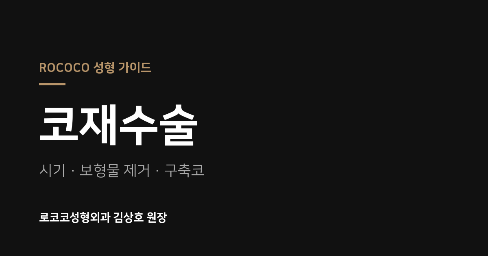

가이드 글 (26편)
 코재수술
코재수술
코재수술 후 담배와 아이코스를 끊어야 하는 이유
보형물을 쓰는 코재수술은 제가 하는 수술 중 염증 가능성이 가장 높은 수술입니다. 담배와 궐련형 전자담배가 상처 치유와 염증에 어떤 영향을 주는지 설명합니다.
2026. 10 광대성형
광대성형
광대축소술 후 볼처짐, 어디가 어떻게 처지는 걸까
광대축소술 후 볼처짐을 턱선이 늘어지는 것으로 아는 분이 많지만 실제로는 다릅니다. 볼처짐이 생기는 방향과 원인, 45도 광대를 얼마나 줄이느냐가 중요한 이유를
2026. 10 콧구멍성형
콧구멍성형
비공내리기 부작용과 한계, 귀와 코로 나눠 정리
귀연골과 피부를 함께 옮기는 비공내리기 수술에서 실제로 불편이 있었던 부분과 한계를 귀(채취부)와 코(이식부)로 나눠 정리했습니다. 각각 얼마나 드물고 어떻게 대
2026. 10 코성형
코성형
늑연골 코성형을 첫 코수술로 하는 경우
첫 코수술에 늑연골을 쓰는 것에 거부감을 느끼는 분이 많습니다. 저도 첫 수술은 대부분 비중격연골이나 귀연골을 권하지만, 늑연골 코성형이 훨씬 나은 결과가 예상되
2026. 10 광대성형
광대성형
퀵광대 부작용 총정리 — 흉터, 불유합, 신경, 볼처짐까지
퀵광대에서 생길 수 있는 부작용을 흉터, 염증, 출혈, 불유합, 신경 손상, 볼처짐, 예측하기 어려운 경우까지 일곱 가지로 나눠 각각 어떻게 대비하는지 정리했습니
2026. 10
코재수술코재수술 전에 알아야 할 부작용 13가지와 대처
코수술과 코재수술 후 생길 수 있는 부작용을 멍과 붓기, 감각 이상, 혈종, 보형물 거부반응, 코막힘, 피부괴사까지 13가지로 나눠 각각 어떻게 대처하는지 정리했
2026. 10 광대성형
광대성형
광대축소술 고정 vs 비고정, 뼈가 벌어지는 진짜 이유
광대축소술은 나사로 고정해야 안전하고 비고정은 뼈가 벌어진다는 말이 많습니다. 재수술 환자의 x-ray로 본 실제 모습과, 뼈가 잘 붙는지를 좌우하는 진짜 요인을
2026. 10 콧구멍성형
콧구멍성형
비공내리기 하면 코끝이 커진다? 하면 안 되는 수술이라는 말의 진실
비공내리기는 하면 안 되는 수술이라는 글을 보고 걱정하는 분이 많습니다. 코끝이 커지는 이유와 그 정도, 복코 교정과 함께 원할 때의 문제, 수술 초기 벙벙함이
2026. 10 코성형
코성형
늑연골 코성형, 콧대까지 늑연골로 해야 할까
늑연골 코성형을 할 때 콧대까지 늑연골로 높여 달라는 분들이 있습니다. 콧대에 실리콘과 늑연골을 쓸 때의 장단점, 장기 경과에서 본 문제, 와핑을 막는 방법을 정
2026. 10 코재수술
코재수술
코재수술로도 바꿀 수 없는 것 — 코 바닥 길이, 코끝 피부, 밴드현상
코재수술을 여러 번 받아도 원하는 코가 나오지 않는 데는 현대의학으로 바꿀 수 없는 부분이 있기 때문입니다. 코 바닥 길이, 코끝 피부 표면적, 콧대 중앙 밴드현
2026. 10 광대성형
광대성형
퀵광대 위험한 수술인가요? 안전성을 판단하는 기준
퀵광대가 위험하다는 글을 보고 걱정하는 분이 많습니다. 왜 그런 말이 나오는지, 이 방식이 학술지에 실린 적이 있는지, 무엇으로 안전성을 판단해야 하는지 정리했습
2026. 10 광대성형
광대성형
광대축소술 수술법 비교 — 관상절개, 입안절개, 두피 절개 방식의 장단점
광대축소술은 어디를 절개해 광대뼈에 접근하는지, 자른 뼈를 고정하는지에 따라 방식이 크게 달라집니다. 관상절개, 입안절개, 두피 쪽 작은 절개 방식의 장단점을 정
2026. 10 코성형
코성형
늑연골 코성형 하면 코끝이 뾰족하게 비친다?
늑연골 코성형을 하면 코끝이 뾰족해지고 비친다는 이야기 때문에 망설이는 분이 많습니다. 코끝이 뾰족해지고 비치는 진짜 이유는 재료가 아니라 피부 여유에 비해 얼마
2026. 10 콧구멍성형
콧구멍성형
비공내리기와 코재수술을 함께 할 때 — 들창코·구축코 교정
코끝이 들려 콧구멍이 많이 보이는 들창코나 구축코는 코끝만 내려서는 콧구멍이 다 가려지지 않는 경우가 많습니다. 비공내리기를 코수술과 함께 하는 이유와 미리 알아
2026. 10 코재수술
코재수술
코재수술의 가장 흔한 원인, 콧대 S라인이란
코재수술을 받는 가장 흔한 원인은 콧대 S라인입니다. 콧대 피부의 여유가 부위마다 달라서 세월이 지나면 코끝은 낮아지고 코끝 위는 볼록해지는 원리와 교정의 한계를
2026. 10 광대성형
광대성형
퀵광대 효과가 작다는 말, 어디까지 사실일까
퀵광대는 효과가 작다는 말은 절반만 맞습니다. 옆광대는 입안절개 방식과 차이가 없고, 45도 광대는 덜 줄이는 대신 볼처짐 부담이 적습니다. 효과를 가늠하는 기준
2026. 10 코재수술
코재수술
구축코란? 코끝이 들려 올라가는 원인과 자가늑연골·비공내리기 교정 방법
코성형 후 코끝이 들리고 콧구멍이 드러나는 구축코. 생기는 원인과 자가늑연골, 비공내리기, 비주내리기 교정 방법, 한계까지 그동안 올렸던 케이스를 모아 정리했습니
2026. 10 광대성형
광대성형
광대축소술 효과는 얼굴형이 결정합니다 — A·B·C형, 도토리형, W광대
광대축소술 효과는 수술법보다 타고난 얼굴형에서 먼저 정해집니다. 효과가 좋은 A형, 중간인 B형(아랫광대), 효과가 적은 C형과 도토리형, 뼈를 줄여도 남아 보이
2026. 10 콧구멍성형
콧구멍성형
비공내리기만이 답은 아닙니다 — 콧구멍이 보이는 4가지 원인과 해결법
콧구멍이 보이는 이유는 들창코, 위로 올라간 콧구멍, 아래로 내려간 콧구멍, 큰 콧구멍 네 가지입니다. 원인에 따라 비공내리기, 콧날개올리기, 콧구멍축소술 중 무
2026. 10 코성형
코성형
늑연골 코성형으로 휜코 교정 — 여러 번 실패했다면
여러 번 수술해도 휜코가 교정되지 않았다면 원인이 지지대에 있는지, 얼굴 축에 있는지부터 봐야 합니다. 늑연골 코성형으로 휜코를 교정한 사례와 함께 비염 수술을
2026. 10 코성형
코성형
코성형 재료 비교 - 비중격연골·귀연골·자가늑연골, 코끝엔 뭘 써야 할까
코성형에서 코끝을 높이는 재료는 비중격연골, 귀연골, 자가늑연골 세 가지입니다. 각각의 장단점과 안장코 같은 걱정거리까지 제 설명으로 정리했습니다.
2026. 10 광대성형
광대성형
퀵광대와 변형15분 광대축소술 차이 — 옆광대만 할까, 45도 광대까지 할까
퀵광대는 옆광대만 넣는 15분 광대축소술과 45도 광대까지 줄이는 변형15분 광대축소술로 나뉩니다. 수술 시간, 회복 기간, 효과 차이를 표로 정리했습니다.
2026. 10 콧구멍성형
콧구멍성형
비공내리기 수술이란? 3세대 비공내리기의 효과와 흉터, 회복 기간
콧구멍이 많이 보이는 것을 가려주는 비공내리기 수술. 1~3세대로 발전해 온 수술법과 흉터가 어느 정도 보이는지, 회복 기간, 콧구멍 모양별 결과 차이까지 정리했
2026. 09 코재수술
코재수술
코재수술 언제 받아야 할까? 6개월설의 진실과 보형물 제거수술과의 차이
코재수술은 정해진 시기가 없습니다. 왜 6개월이라는 말이 나오는지, 언제 바로 재수술이 가능한지, 그리고 자주 헷갈리는 보형물 제거수술과의 차이를 정리했습니다.
2026. 09 코성형
코성형
늑연골 코성형이란? 자가늑연골과 기증늑연골 비교, 흉터와 코 휨 궁금증 정리
늑연골 코성형에서 자주 묻는 질문을 정리했습니다. 자가늑연골과 기증늑연골의 차이, 채취 흉터, 코가 휜다는 말, 석회화 걱정까지 김상호 원장의 경험 기준입니다.
2026. 09 광대성형
광대성형
광대축소술 종류와 선택 기준 - 옆광대·45도 광대·뒷광대, 퀵광대는 누구에게 맞을까
광대축소술은 옆광대, 45도 광대, 뒷광대 중 어디가 문제인지에 따라 방법이 달라집니다. 퀵광대 방식의 효과와 회복 기간, 관자 꺼짐 착시까지 정리했습니다.
2026. 09